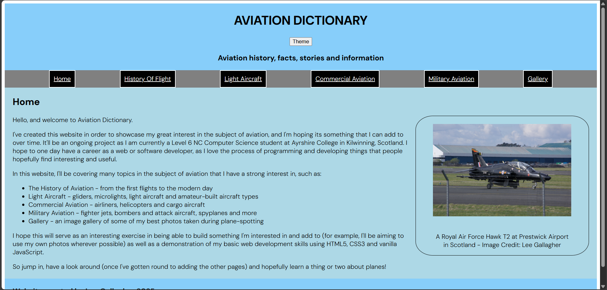
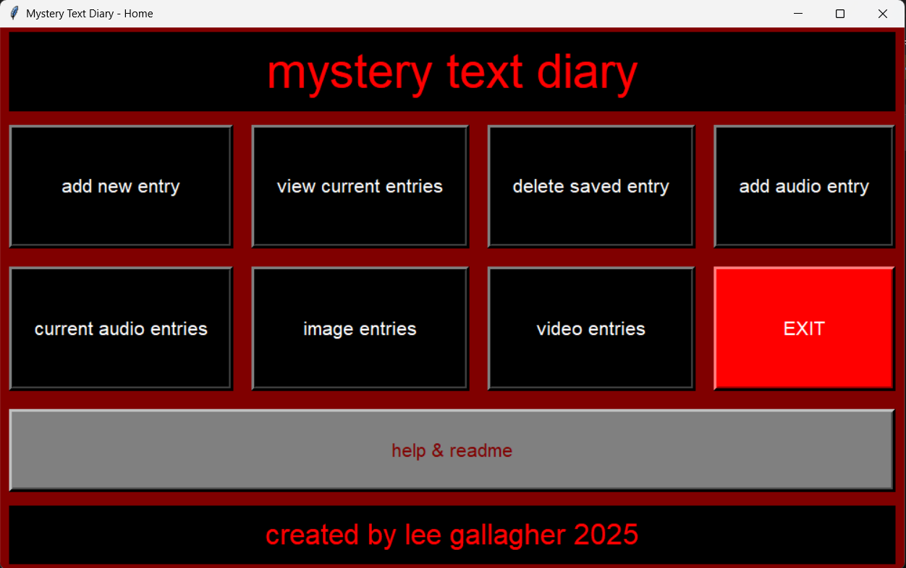
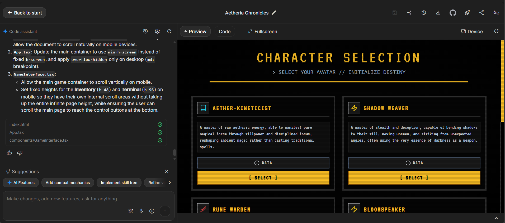

DEVELOPMENT
Over the past few years, my priority when it comes to learning in the computer science subject has been to build a skillset that will serve me well both in industry in the future as well as stand me in good stead to seek freelance opportunities as well. As such I have put a lot of time into learning the skills of a jack-of-all-trades web and software developer.
This journey has taken me from learning basic front-end web development, to programming in high-level languages, UI/UX design, to now learning back-end development, "vibe coding" and even lesser-known parts of the subject such as low-level languages, embedded systems programming and quantum computers.
Web Design & Development
Where it all began for me and one of the areas that I'm still most passionate about, I have about 5 years of experience in designing and building websites using a variety of web development tools.
I am highly proficient in HTML5 and CSS3 as well as vanilla JavaScript - those three core technologies forming the foundation of basic website design & development. I also have some experience in using "what you see is what you get" (or WYSIWYG) editors and Content Management Systems (CMS) such as WordPress, where I have some experience building websites both using pre-built themes and plugins as well as some basic experience in designing my own themes using PHP.
Most of my web projects so far have been personal projects, making websites about my interests. However, I am eager to continue to grow my skills and build websites for other people and organisations. I am also excited to be beginning my journey into back-end web development using Node, Express and MongoDB. I would also like to learn more in the realm of JavaScript frameworks such as React, Next and Nuxt.
Programming & Software Development
My journey in software development started a little later when I started college a year and a half ago, where I learned the basics of programming in beginner-friendly programming languages such as Python and C#. I enjoyed Python in particular for it's versatility, and as such I would consider myself to be a fairly competent Python programmer. The screenshot of the "diary" app to the right-hand-side is the main menu of a personal diary app that I wrote in Python, using a GUI framework called Tkinter.
I also know some JavaScript, which is crucial for web development, and I am currently learning more C# as well as some entry-level Java concepts. I have some ideas for web and mobile applications that I want to develop in the near future and as such I expect my passion and expertise in the area of software development to only grow over time, with my ultimate end goal being to become a software engineer professionally.
Electronics & Embedded Systems
My interest in computers and digital systems extends beyond software too. From a young age I was always interested in aviation, space and robotics, and so I've recently began exploring basic electronics as well. I started off simple with the BBC micro:bit, a very beginner-friendly but nonetheless interesting board that allowed me an easy entry into the field of electronics. It can be programmed in "Blocks", a Scratch-like drap and drop language, as well as MicroPython, a type of Python used in embedded systems and electronics.
I also have some basic experience with other more advanced boards such as the Arduino UNO and the Raspberry Pi Pico H. For the Pico, I have used MicroPython to do some basic things, but with the Arduino UNO I have taken my first steps into C++ programming. I would like to continue to learn C and C++, as these remain the standard for embedded systems and low-level (close to hardware) work.
Overall, I am still very new to hardware and electronics, but I'm very excited to continue to learn more as I continue to practice with them.
Vibe Coding & AI Development
As a general rule, I DO NOT use AI in my journey to learn programming and software development. However, it is nonetheless a tool that will continue to be with us from now on, and as such I have began attending a local meetup group where for a couple of hours at a time I allow myself to build projects using Google AI Studio. I have to admit, it is an impressive and powerful tool, and whilst I wouldn't want it to replace a good understanding of the fundamentals of software programming and engineering, I can see its benefits clearly.
As time goes, I'm sure I'll become wiser and learn better how to integrate the use of AI into projects that I do in the future, as I do believe that it will be a big part of software engineering & development - indeed, I have heard as much from people who are in the industry already. It is also good to keep up with current trends - which is perhaps more important in the Computer Science field than in almost any other - and as such, whilst I wouldn't want to be over-reliant on any one tool, I would likely be wise not to ignore it. I guess my ultimate vision would be to be a "vibe-assisted" or "AI-partnered" developer - having the AI be a loyal wingman to my own vision and battle plan.